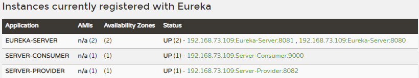
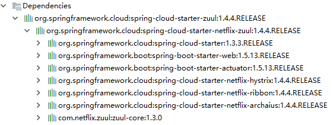
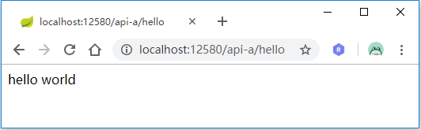
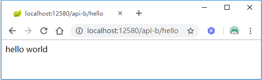
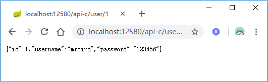
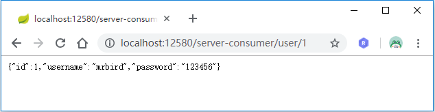
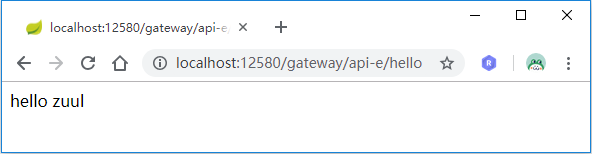

在微服务的架构中，服务网关就是一个介于客户端与服务端之间的中间层。在这种情况下，客户端只需要跟服务网关交互，无需调用具体的微服务接口。这样的好处在于，客户端可以降低复杂性；对于需要认证的服务，只需要在服务网关配置即可；同样也方便后期微服务的变更和重构，即微服务接口变更只需在服务网关调整配置即可，无需更改客户端代码。
Zuul是一款由Netflix开发的微服务网关开源软件，可以和其自家开发的Eureka，Ribbon和Hystrix配合使用，Spring Cloud对其进行了封装。
Spring Cloud Zuul入门
在构建微服务网关之前，我们先将相关微服务搭建好。这里我们直接使用前面的例子，分别启动如下服务：
启动Eureka-Server集群，端口号为8080和8081；
启动一个Eureka-Client，端口号为8082；
启动一个Feign-Consumer，端口号为9000；

其中Feign-Consumer虽然之前我们将它定义为服务消费者，但其也可以充当服务提供者的角色。
启动好这些微服务后，我们开始构建一个微服务网关Zuul-Gateway。新建一个Spring Boot项目，artifactId为Zuul-Gateway，然后引入如下依赖：
|
|
查看依赖关系可看到spring-cloud-starter-zuul包含以下依赖：

因为spring-cloud-starter-zuul依赖已经包含了Hystrix和Ribbon，所以zuul支持前面介绍的Hystrix和Ribbon相关配置。
接着在Spring Boot的入口类上标注@EnableZuulProxy注解，开启Zuul服务网关的功能：
|
|
最后简单配置下application.yml：
|
|
至此一个简单的Zuul微服务网关就搭建好了，下面开始对路由规则进行配置。
路由配置
传统配置
传统配置就是手动指定服务的转发地址，如在yml中配置：
|
|
通过上面的配置，所有符合/api-a/**规则的访问都将被路由转发到http://localhost:8082/地址上，即当我们向服务网关访问http://localhost:12580/api-a/hello请求的时候，请求将被转发到http://localhost:8082/hello服务上：

基于服务名称配置
传统的配置方式不便之处在于需要知道服务的具体地址和端口号等信息，我们可以借助Eureka来实现通过服务名称配置路由。在Zuul-Gateway项目中引入Eureka依赖：
|
|
然后在入口类中加入@EnableDiscoveryClient注解，使其具有获取服务的能力。
接着在yml中配置基于服务名称的路由：
|
|
上面我们首先指明了Eureka服务注册中心的地址，然后配置了api-b和api-c的路由，它们都是通过serviceId来指定服务名称的。
启动Zuul-Gateway，访问：http://localhost:12580/api-b/hello：

访问：http://localhost:12580/api-c/user/1：

基于服务名称的路由配置还可以进行简化，格式为zuul.routes.<serviceid>=<path>，所以我们可以将api-b和api-c的路由配置修改为：
|
|
默认路由配置规则
我们尝试访问http://localhost:12580/server-consumer/user/1:

我们压根没配置这个路由啊，为什么可以正常响应？？其实Zuul配合Eureka后将会成一套默认的配置规则。当我们使用服务名称作为请求的前缀路径时，实际上就会匹配上类似下面的默认路由配置：
|
|
如果不想启动这个默认配置，我们可以使用zuul.ignored-services配置来关闭，如在yml中加入如下配置之后，再次访问http://localhost:12580/server-consumer/user/1将返回404：
|
|
设置为zuul.ignored-services=*的时候将关闭所有默认路由配置规则。
优先级
假如某个请求路径可以和多个路由配置规则相匹配的话，Zuul根据匹配的先后顺序来决定最终使用哪个路由配置。比如：
|
|
当我们访问http://localhost:12580/api-c/user/1的时候，api-c和api-d的路由配置都可以匹配上，但由于api-c先于api-d配置，所以最终生效的是api-c的配置。
假如将api-c和api-d的配置顺序调换，再次访问http://localhost:12580/api-c/user/1时将抛出异常，原因是不存在服务名为lol的服务：
Caused by: com.netflix.client.ClientException: Load balancer does not have available server for client: lol
前缀配置
zuul.prefix可以为网关的请求路径加个前缀，比如：
|
|
这样配置后，我们通过Zuul网关获取服务的时候，路径也得加上这个前缀，如http://localhost:12580/gateway/api-c/user/1。
本地跳转
Zuul网关除了支持将服务转发到各个微服务上之外，还支持将服务跳转到网关本身的服务上，比如现在yml中有如下一段配置:
|
|
当访问http://localhost:12580/gateway/api-e/hello时，Zuul会从本地/test/hello获取服务。
我们在Zuul-Gateway入口类中加上该REST服务：
|
|
效果如下所示：

头部过滤 & 重定向
在使用Zuul网关的时候你可能会遇到Cookie丢失的情况，这是因为默认情况下Zuul会过滤掉HTTP请求头中的一些敏感信息，这些敏感信息通过下面的配置设定：
|
|
如果想关闭这个默认配置，通过设置全局参数为空来覆盖默认值：
|
|
如果只想关闭某个路由的HTTP请求头过滤，可以这样：
|
|
使用Zuul另一个常见问题是重定向的问题，可以通过下面的设置解决：
|
|
过滤器
Zuul另一个核心的功能就是请求过滤。Zuul中默认定义了4种不同生命周期的过滤器类型，在如下图所示

图片来自于 Zuul GitHub
这4种过滤器处于不同的生命周期，所以其职责也各不相同：
PRE：PRE过滤器用于将请求路径与配置的路由规则进行匹配，以找到需要转发的目标地址，并做一些前置加工，比如请求的校验等；
ROUTING：ROUTING过滤器用于将外部请求转发到具体服务实例上去；
POST：POST过滤器用于将微服务的响应信息返回到客户端，这个过程种可以对返回数据进行加工处理；
ERROR：上述的过程发生异常后将调用ERROR过滤器。ERROR过滤器捕获到异常后需要将异常信息返回给客户端，所以最终还是会调用POST过滤器。
核心过滤器
Spring Cloud Zuul为各个生命周期阶段实现了一批过滤器，如下所示：

这些过滤器的优先级和作用如下表所示：
| 生命周期 | 优先级 | 过滤器 | 功能描述 |
|---|---|---|---|
| pre | -3 | ServletDetectionFilter | 标记处理Servlet的类型 |
| pre | -2 | Servlet30WrapperFilter | 包装HttpServletRequest请求 |
| pre | -1 | FormBodyWrapperFilter | 包装请求体 |
| route | 1 | DebugFilter | 标记调试标志 |
| route | 5 | PreDecorationFilter | 处理请求上下文供后续使用 |
| route | 10 | RibbonRoutingFilter | serviceId请求转发 |
| route | 100 | SimpleHostRoutingFilter | url请求转发 |
| route | 500 | SendForwardFilter | forward请求转发 |
| post | 0 | SendErrorFilter | 处理有错误的请求响应 |
| post | 1000 | SendResponseFilter | 处理正常的请求响应 |
其中优先级数字越小，优先级越高。
要关闭这些过滤器可以在applicaiton.yml中按照格式zuul.<SimpleClassName>.<filterType>.disable=true配置即可。比如关闭SendResponseFilter过滤器：
|
|
自定义Zuul过滤器
我们自定义一个PreSendForwardFilter用于获取请求转发前的一些信息：
|
|
可以看到自定义Zuul过滤器只需要继承ZuulFilter，然后实现以下四个抽象方法即可：
filterType：对应Zuul生命周期的四个阶段：pre、post、route和error；
filterOrder：过滤器的优先级，数字越小，优先级越高；
shouldFilter：方法返回boolean类型，true时表示是否执行该过滤器的
run方法，false则表示不执行；run：过滤器的过滤逻辑。
继续完善PreSendForwardFilter：
|
|
这时候访问http://localhost:12580/api-a/hello，控制台将打印出：
|
|
源码链接 https://github.com/wuyouzhuguli/SpringAll/tree/master/39.Spring-Cloud-Zuul-Router
参考资料： Spring Cloud微服务实战